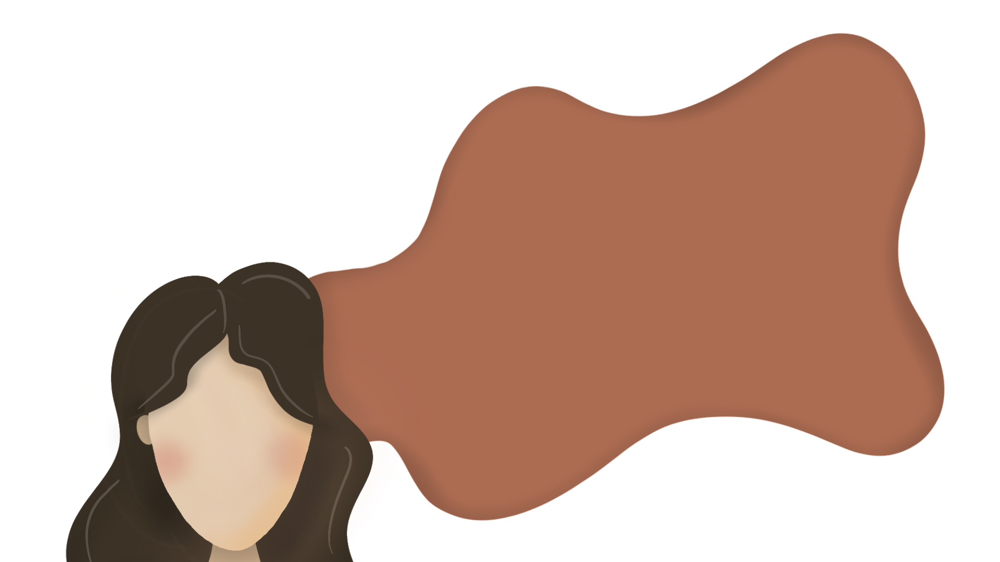

I am a Industrial Design student who has a pet Bichon named Munchie (the only reason why I have friends) Apart from Munchie, I really love eating, sleeping, and watching Netflix. Fun Fact: I can touch the tip of my nose with my tongue!

my strengths as a designer are:
Meticulous. I pay attention to the small details during my design process.
Research. This allows me to design more accurately for the project that I am working on.
Empathy. I am able to understand my target users and meet their needs better.